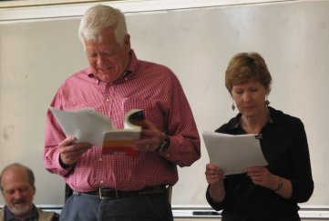
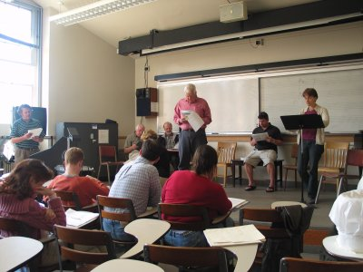
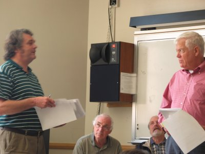
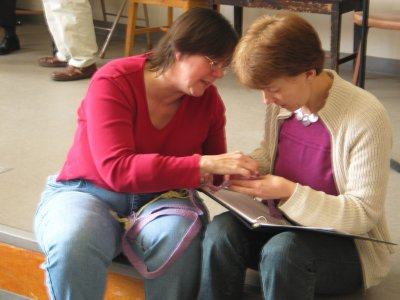
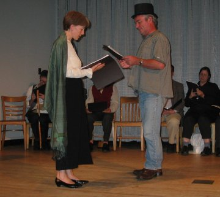
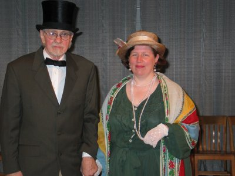
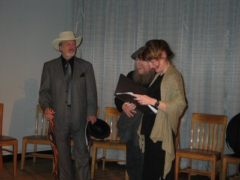

![[Goose]](../../../images/goose.gif)
The Other Bloomsday - Seattle 2004 - Pictures
Rehearsals
Photos by George Reilly.

Bloom (Jim McDermott) and the Book (Mary Kelly)

Bloom (Jim McDermott) and the Narrator (Maura Donegan)

Kieran explains something. Jim is having none of it.

Interlude: Emma shows her weaving to Maura.
Dress Rehearsal
Most photos by Frank Maloney.

Mrs Sheehy (Maura Donegan) chats with Fr Conmee (Conor Byrne).
![[Corny and Constable 57-C]](126_2626.JPG) Corny Kelleher (Ciaran O'Mahony) and Constable 57-C (Michael Green).
Corny Kelleher (Ciaran O'Mahony) and Constable 57-C (Michael Green).

The Earl of Dudley (Lyndol Pullen) and Lady Dudley (Ann Glusker).

Denis J. Maginni (Bill Barnes), Joe Martin, and
Olivia Bermingham-McDonogh.
Corny Kelleher (Ciaran O'Mahony) and Constable 57-C (Michael Green).